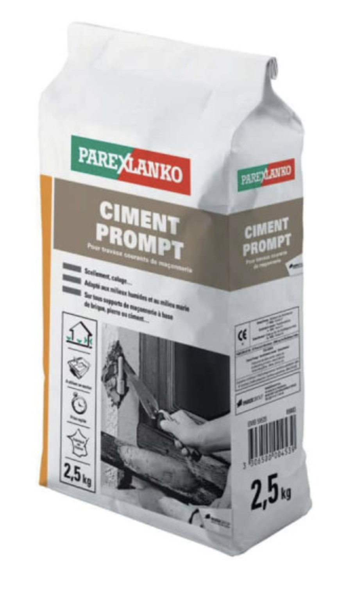
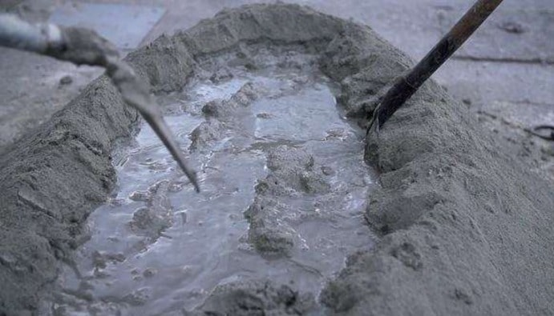

Retour
Page précédente
Page suivante
QCM : Matériaux de Carrière - Auto-évaluation
Le ciment (3)
1. Que signifie l'abréviation CEM dans le domaine des ciments ?
Ciments et normes
×
A) CEM signifie "Cement", en particulier dans les normes européennes, où elle désigne un type de ciment conforme aux standards EN 197-1
B) CEM est l'abréviation de "Ciment Européen Minéral" définie par la norme E2013-A
C) CEM est une référence au "Ciment Écologique Minéral", un ciment bas carbone qui sera imposé à partir de 2030
D) CEM désigne le clinker normalisé européen "Clinker European Mass" défini par la norme européenne E2021-1
Commentaire:
L'abréviation CEM est utilisée pour désigner un ciment conforme aux normes européennes, spécifiquement dans le cadre de la classification des ciments selon la norme EN 197-1. Cette norme définit les types de ciments portland, les ciments mixtes et les ciments spéciaux utilisés dans le secteur de la construction. Les autres réponses sont incorrectes.
2. Quelle est la différence entre ciment naturel et ciment artificiel ?
A) Le ciment naturel utilise des matériaux bio-sourcés.
B) Le ciment naturel est fabriqué à partir d'une roche appropriée, extraite en un seul endroit. Le ciment artificiel est fabriqué à partir d'un mélange de roches extraites en plusieurs endroits
C) Le ciment articiel est un ciment composite renforcé par des armatures métalliques.
D) Le ciment naturel est fabriqué uniquement à partir de calcaires et d'argiles, alors que le ciment artificiel est additionné d'oxydes métalliques.
Commentaire:
Le ciment naturel est issu de la cuisson de roches naturellement composées de calcaire et d’argile, souvent dans des proportions adaptées directement par la géologie du site. Le ciment artificiel, en revanche, nécessite un mélange précis de calcaire et d’argile. Le processus industriel du ciment artificiel permet de mieux contrôler ses propriétés mécaniques et chimiques, contrairement au ciment naturel, qui peut présenter des variations selon l’origine des matériaux.
3. Pourquoi utilise-t-on le terme de "ciment prompt" ?

Du ciment prompt à la vente
×
A) Parce que sa prise est rapide
B) Parce qu’il est fabriqué rapidement dans des fours à basse température
C) Parce qu’il contient des additifs accélérant la prise.
D) Parce qu’il se dissout rapidement dans l’eau.
Commentaire:
Le ciment prompt est un ciment naturel. Ce terme "ciment prompt" fait référence à sa capacité à durcir très rapidement après le mélange avec de l’eau, en général en quelques minutes. Ce type de ciment, obtenu par cuisson douce de calcaires argileux naturels, est particulièrement apprécié pour les travaux de scellement, les réparations urgentes ou les applications en milieu humide ou sous-marin. Les autres propositions sont incorrectes : il n’est ni produit rapidement, ni conçu pour se dissoudre dans l’eau, et ne contient pas d’additifs spécifiques.
4. Comment s'appelle l'opération de mélange de la poudre de ciment avec de l'eau ?

Mélanger de l'eau et du ciment
×
A) Cette opération s'appelle la malaxation.
B) Cette opération s'appelle l'hydratation.
C) Cette opération s'appelle le mouillage.
D) Cette opération s'appelle le gâchage.
Commentaire:
Le mélange de la poudre de ciment avec de l'eau est appelé *gâchage*. C'est une étape essentielle où l'eau active les réactions chimiques d’hydratation, initiant la prise et le durcissement du ciment. Bien que le terme "malaxation" soit parfois utilisé pour désigner un mélange plus général, seul le "gâchage" décrit spécifiquement cette opération. Le terme de gâchage partage la même racine étymologique que des mots anglo-saxons comme "Wasser", "water", "waschen", etc
5. Quels sont les quatre constituants principaux du clinker ?
A) Les quatre constituants principaux sont le kaolin, la magnésie, l'aragonite et l'argile.
B) Les quatre constituants principaux sont la calcite, l'alumine, le quartz et le feldspath.
C) Les quatre constituants principaux sont la chaux, le gypse, la portlandite et la silice.
D) Les quatre constituants principaux sont l'alite (C
3
S), la bélite (C
2
S), l'aluminate tricalcique (C
3
A) et le ferrite tétracalcique (C
4
AF).
Commentaire:
Le clinker est principalement composé de quatre phases minérales : l'alite (CS), responsable de la prise initiale et des propriétés mécaniques, la bélite (C
2
S), qui assure des résistances à long terme, l'aluminate tricalcique (C
3
A), qui réagit rapidement avec l'eau, et le ferrite tétracalcique (C
4
AF), qui contribue à la couleur et à certaines réactions secondaires. Les autres réponses mentionnent des matériaux présents dans d'autres contextes, mais pas dans le clinker.
6. Quelles sont les propriétés principales de l'alite ?
A) L'alite réagit rapidement avec l'eau, assurant une prise initiale rapide et conférant des résistances mécaniques élevées au jeune âge du ciment.
B) L'alite est responsable de la couleur grise du ciment.
C) L'alite réagit lentement avec l'eau et favorise les résistances à long terme.
D) L'alite est stable uniquement à basse température et ne contribue pas à la prise du ciment.
Commentaire:
L'alite, ou silicate tricalcique (C
3
S), est le principal constituant du clinker. Elle hydrate rapidement au contact de l'eau, produisant de grandes quantités de chaleur et formant des silicates de calcium hydratés (CSH), essentiels pour la résistance mécanique du ciment. Contrairement à la bélite, elle agit surtout au jeune âge du matériau. Les autres propositions sont incorrectes ou ne reflètent pas ses véritables propriétés.
7. Quelles sont les propriétés principales de la bélite ?
A) La bélite ne participe pas aux réactions d’hydratation du ciment.
B) La bélite hydrate lentement et contribue principalement aux résistances mécaniques à long terme du ciment.
C) La bélite est responsable de la couleur grise du ciment.
D) La bélite hydrate rapidement et produit beaucoup de chaleur.
Commentaire:
La bélite, ou silicate bicalcique (C
2
S), est un constituant du clinker qui réagit plus lentement avec l’eau que l’alite. Elle joue un rôle clé dans les résistances mécaniques à long terme du ciment, en formant des silicates monocalciques hydratées CSH de manière progressive. Contrairement à l’alite, elle génère moins de chaleur lors de son hydratation. Les autres propositions exagèrent ou méconnaissent ses caractéristiques réelles.
8. Quelles sont les propriétés principales de l'aluminate tricalcique ?
A) L'aluminate tricalcique ne réagit pas avec l'eau
B) L'aluminate tricalcique hydrate lentement et améliore les résistances à long terme
C) L'aluminate tricalcique réagit très rapidement avec l'eau, contribuant à la prise initiale et générant une chaleur importante
D) L'aluminate tricalcique est le principal responsable des résistances mécaniques élevées
Commentaire:
L'aluminate tricalcique (C
3
A) est connu pour sa grande réactivité avec l'eau, ce qui génère une prise très rapide et libère une chaleur importante, utile dans les climats froids. Cependant, cette réactivité doit être contrôlée pour éviter une prise trop rapide, souvent grâce à l'ajout de gypse. Contrairement à l’alite et à la bélite, il ne joue pas un rôle majeur dans les résistances mécaniques à long terme.
9. Quelles sont les propriétés principales du ferrite tétracalcique ?
A) Le ferrite tétracalcique produit une grande quantité de chaleur lors de son hydratation.
B) Le ferrite tétracalcique hydrate très lentement et ne participe pas à la prise du ciment.
C) Le ferrite tétracalcique contribue modestement aux résistances mécaniques et accélère légèrement la prise tout en influençant la couleur du ciment.
D) Le ferrite tétracalcique est le principal responsable des résistances mécaniques à long terme.
Commentaire:
Le ferrite tétracalcique (C
4
AF), bien qu'il soit présent en plus faible proportion que l’alite ou la bélite, joue un rôle secondaire dans la prise du ciment et ses propriétés mécaniques. Il contribue principalement à la teinte grisâtre du ciment grâce à sa composition contenant du fer. Sa réactivité est intermédiaire, et il ne produit pas une quantité importante de chaleur lors de l’hydratation.
10. À quoi est due la prise rapide du ciment prompt ?
A) Elle est due à une absence totale de calcaire dans sa composition.
B) Elle est due à la présence de phases riches en aluminates (C
3
A) et à une cuisson à basse température qui favorise des réactions rapides avec l’eau.
C) Elle est due à des additifs chimiques spéciaux accélérant la prise.
D) Elle est due à un mélange avec du gypse pur.
Commentaire:
La prise rapide du ciment prompt s'explique par sa composition chimique, en particulier la présence d'aluminates de calcium (C
3
A) qui réagissent rapidement avec l'eau. De plus, la cuisson à plus basse température que pour le clinker traditionnel conserve des phases réactives. Contrairement aux idées reçues, ce ciment ne doit pas sa prise rapide à des additifs ou à l’absence de calcaire.
11. Quelles sont les proportions de C
3
S, C
2
S, C
3
A et C
4
AF dans un clinker ?
A) Le clinker contient principalement du C
3
S et très peu de C
2
S, C
3
A et C
4
AF.
B) Les proportions typiques dans un clinker standard sont environ 60-70% de C
3
S, 15-25% de C
2
S, 5-10% de C
3
A et 5-10% de C
4
AF
C) Le clinker est composé d'environ 40% de C
3
S, 40% de C
2
S, 10% de C
3
A et 10% de C
4
AF
D) Le C
3
S est pratiquement absent dans le clinker, tandis que C
2
S et C
3
A sont majoritaires
Commentaire:
Les proportions exactes peuvent varier en fonction du type de ciment et des matériaux utilisés pour la fabrication du clinker. En règle générale, le clinker contient environ 60-70% de C
3
S, 15-25% de C
2
S, 5-10% de C
3
A et 5-10% de C
4
AF. Ces proportions influencent les propriétés de prise et de résistance du ciment, chaque phase ayant un rôle spécifique dans l'hydratation et le développement des caractéristiques mécaniques du ciment.
12. Quelle est la masse optimale d'eau de gâchage pour un kg de clinker ?
A) La masse optimale d'eau de gâchage est d'environ 1 kg d'eau pour chaque kilogramme de clinker
B) La masse optimale d'eau de gâchage est de 50 g d'eau pour chaque kilogramme de clinker
C) La masse optimale d'eau de gâchage est d'environ 1,5 kg d'eau pour chaque kilogramme de clinker.
D) La masse optimale d'eau de gâchage est d'environ 250 à 300 g d'eau pour chaque kilogramme de clinker
Commentaire:
La quantité d'eau nécessaire pour le gâchage dépend du type de ciment, mais en général, on utilise environ 250 à 300 g d'eau par kilogramme de clinker. Cette proportion permet de garantir une hydratation efficace tout en assurant une bonne maniabilité du mélange. Une quantité trop élevée ou trop faible d'eau peut altérer la prise et la résistance du ciment. Cette masse d'eau peut être estimée par le calcul suivant. Le clinker contient des silicates de calcium C
3
S et C
2
S ayant une masse molaire d'environ 200 g/mol. Donc un kg de clinker contient environ 8 moles de C
2
S et C
3
S, disons, 6 moles de C
3
S et 2 moles de C
2
S. 6 moles de C
3
S ont besoin de 18 moles d'eau pour fournir 18 moles de CSH. 2 moles de C
2
S ont besoin de 4 moles d'eau pour fournir 4 moles de CSH. En tout, pour un kg de clinker, il faut environ 20 moles d'eau pour l'hydrater. Soit une masse d'environ 350 g d'eau, ce qui est dans l'ordre de grandeur de la bonne réponse.
13. Qu'est-ce que le ciment Portland ?
A) Le ciment Portland est un ciment utilisé uniquement dans la construction de structures en béton haute résistance.
B) Le ciment Portland est le type de ciment le plus couramment utilisé.
C) Le ciment Portland est un ciment qui ne durcit que sous l'action de la chaleur.
D) Le ciment Portland est un ciment à base de calcaire uniquement, sans autres constituants.
Commentaire:
Le ciment Portland est le type de ciment le plus couramment utilisé dans la construction moderne. Il est produit en chauffant un mélange de calcaire et d'argile à des températures élevées pour former du clinker, puis en le broyant avec un peu de gypse. Il est principalement composé de silicates de calcium, et il durcit par réaction avec l'eau pour former des produits hydratés tels que des silicates de calcium hydratés (CSH) et de la portlandite (Ca(OH)
2
). Ce type de ciment est apprécié pour ses propriétés mécaniques et sa durabilité, et est utilisé pour des applications allant de la construction de bâtiments à la fabrication de béton préfabriqué.
14. Pourquoi rajouter du gypse dans le clinker ?
A) Le gypse est ajouté au clinker pour éviter une prise trop rapide du ciment
B) Le gypse est ajouté pour faciliter la production de clinker.
C) Le gypse est ajouté pour améliorer la couleur du ciment.
D) Le gypse est ajouté pour augmenter la résistance du ciment à long terme.
Commentaire:
Le gypse est un régulateur de prise qui permet de contrôler la vitesse d'hydratation du ciment, ce qui est crucial pour éviter une prise trop rapide après le mélange avec l'eau. Cela permet également d'éviter une surchauffe lors de l'hydratation du C
3
A et assure que le ciment conserve une plasticité suffisante pour être manipulé avant la prise complète.
15. Pour faire un mortier, je mélange
A) du ciment, des argiles et de l'eau
B) du ciment, du sable et de l'eau
C) du ciment, de la chaux et de l'eau
D) du ciment, des graviers et de l'eau
Commentaire:
Le mortier est un matériau de construction polyvalent composé de ciment, de sable et d'eau, parfois enrichi d'additifs pour améliorer ses propriétés. Il est utilisé pour sceller, enduire ou assembler des éléments de maçonnerie. Contrairement au béton, le mortier ne contient pas de granulats comme des cailloux, ce qui lui confère une texture fine adaptée à des applications plus précises.
16. Pour faire un béton, je mélange
A) Du sable, des granulats et de l'eau, sans ciment.
B) Du ciment et de l'eau uniquement.
C) Du ciment, du sable, des granulats (cailloux ou graviers) et de l'eau.
D) Du ciment, du sable et de l'eau, sans granulats.
Commentaire:
Le béton est un matériau composite fabriqué en mélangeant du ciment (le liant), du sable (granulométrie fine), des granulats (comme des graviers ou des cailloux, pour la structure) et de l'eau (pour activer le liant). Le dosage précis de ces composants dépend de l'application visée. Le béton est largement utilisé pour sa résistance mécanique et sa durabilité. Contrairement au mortier, il inclut des granulats pour renforcer sa solidité.
17. Quel est le rôle du sable dans un mortier ?
A) Le sable augmente la prise rapide du mortier.
B) Le sable remplace totalement le ciment dans le mortier.
C) Le sable donne au mortier sa consistance et limite le retrait au séchage, tout en améliorant sa maniabilité.
D) Le sable rend le mortier plus imperméable.
Commentaire:
Dans un mortier, le sable est un composant essentiel. Il agit comme un matériau de remplissage qui confère au mélange sa texture, sa consistance et sa capacité à être appliqué facilement. En répartissant uniformément les charges, il limite également les risques de fissuration pendant le séchage. De plus, le sable permet de réduire la quantité de ciment nécessaire, ce qui rend le mortier plus économique et optimise son durcissement.
18. Quel est le rôle des granulats dans un béton ?
A) Les granulats accélèrent la prise du béton.
B) Les granulats remplacent totalement le ciment dans le béton.
C) Les granulats constituent le squelette du béton, augmentant sa résistance mécanique et réduisant les déformations liées au retrait.
D) Les granulats rendent le béton plus souple à appliquer.
Commentaire:
Les granulats, qu'il s'agisse de graviers ou de cailloux, sont des éléments structuraux du béton. Ils forment un squelette interne qui répartit les charges, améliore la résistance à la compression et réduit les déformations dues au retrait pendant le séchage. Leur présence limite également la quantité de ciment nécessaire, ce qui diminue le coût global tout en améliorant la durabilité du matériau.
19. Qu'est-ce que le béton armé ?
A) Le béton armé est un béton mélangé à de l'eau en grande quantité pour une prise rapide.
B) Le béton armé est un matériau composite combinant du béton et des armatures en acier pour améliorer sa résistance à la traction.
C) Le béton armé est un béton renforcé avec des granulats plus gros pour augmenter sa solidité.
D) Le béton armé est un béton contenant des additifs chimiques pour améliorer son durcissement.
Commentaire:
Le béton armé associe les qualités de résistance à la compression du béton et de résistance à la traction de l'acier. Les armatures en acier, sous forme de barres ou de treillis, sont insérées dans le béton avant sa prise pour créer un matériau capable de résister à des forces combinées, comme celles présentes dans les structures de bâtiments ou de ponts. Cette synergie permet de construire des ouvrages plus robustes et durables.
20. Qu'est-ce que le béton précontraint ?
A) Le béton précontraint est un béton dans lequel des câbles d'acier sont tendus avant ou après la prise pour augmenter sa résistance à la traction.
B) Le béton précontraint est un béton mélangé avec des additifs pour ralentir sa prise.
C) Le béton précontraint est un béton dans lequel l'eau est ajoutée après le durcissement.
D) Le béton précontraint est un béton sans granulats, utilisé uniquement pour des applications légères.
Commentaire:
Le béton précontraint est conçu pour améliorer la résistance du béton face aux contraintes mécaniques, notamment en flexion. Les câbles d'acier tendus avant ou après la prise du béton créent une compression dans la structure, ce qui contrebalance les forces de traction qui pourraient autrement causer des fissures. Ce type de béton est couramment utilisé dans les ponts, les poutres ou les dalles, où une résistance accrue est nécessaire avec des sections réduites.
Corriger
Recommencer